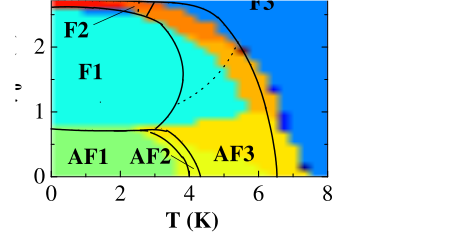

Next: Getting Started ... List Up: McPhase USERS MANUAL Previous: Frequently asked Questions Contents Index
McPhase is a program package designed to calculate properties of a magnetic system with localised magnetic moments given the crystal field and/or the exchange interaction constants. For rare earth ions it is based on the standard model of rare earth magnetism [1]. The Hamiltonian of the standard model of rare earth magnetism is described in section 5. Alternatively, a more complex Hamiltonian can be used which includes all terms in intermediate coupling - this is important for transition metal and actinide ions.
For each of the many tasks of the program package separate programs have been written. Fig. 1 gives an overview of the tasks of these different modules of the program package.
 and magnetic field (vector)
several possible magnetic structures are stabilised
by a mean field algorithm and the free energy is
calculated. The initial values for this mean-field procedure are
modified by a Monte Carlo process.
See Section 7 on how to perform such a simulation.
and magnetic field (vector)
several possible magnetic structures are stabilised
by a mean field algorithm and the free energy is
calculated. The initial values for this mean-field procedure are
modified by a Monte Carlo process.
See Section 7 on how to perform such a simulation.
The temperature and magnetic field is varied during the calculation
and thereby it is possible to map out the magnetic phase diagram.
The program produces a plot of the stabilised magnetic
structures and the magnetisation on screen, the
output files contain additional information
such as calculated magnetoelastic and neutron-diffraction
data. As a typical application of mcphas the calculated magnetic
phase diagram of NdCu is shown in fig. 2.
The exchange parameters required for the calculation of such a complex
antiferromagnet have
been determined from the dispersion of magnetic excitations
measured by neutron spectroscopy with moments aligned ferromagnetically
by an external magnetic field. Details are described elsewhere [2].
is shown in fig. 2.
The exchange parameters required for the calculation of such a complex
antiferromagnet have
been determined from the dispersion of magnetic excitations
measured by neutron spectroscopy with moments aligned ferromagnetically
by an external magnetic field. Details are described elsewhere [2].
|

|